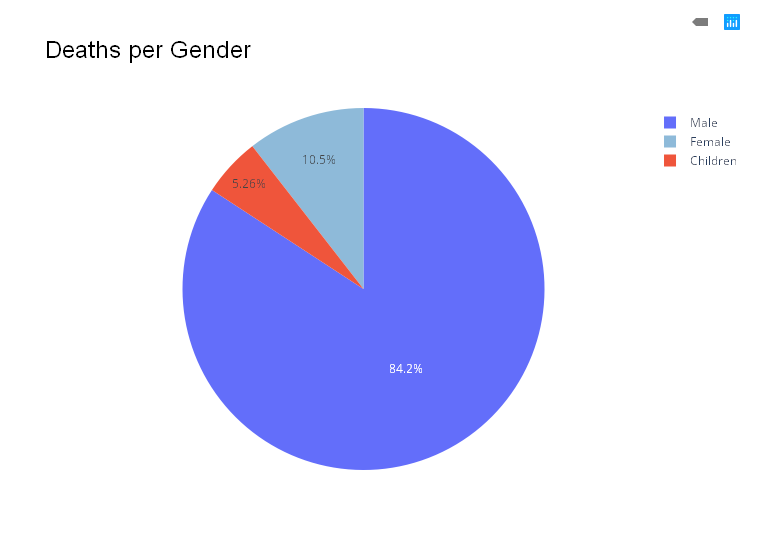

Total Fatalities: 38
Total Injuries: ≥130
Confirmed Gunshot Deaths: 14
Demographics: 4 Female, 2 Children
Contact: info@knchr.org
Data sourced from KNCHR 3rd Update (July 8–12, 2025), media (The Star, Daily Nation, Citizen TV, NTV Kenya, Nation Africa), and social media (Facebook, Instagram). Gunshot deaths partially verified.

Chart shows 4 female (10.5%), 2 children (5.3%), and 32 other (84.2%) fatalities.